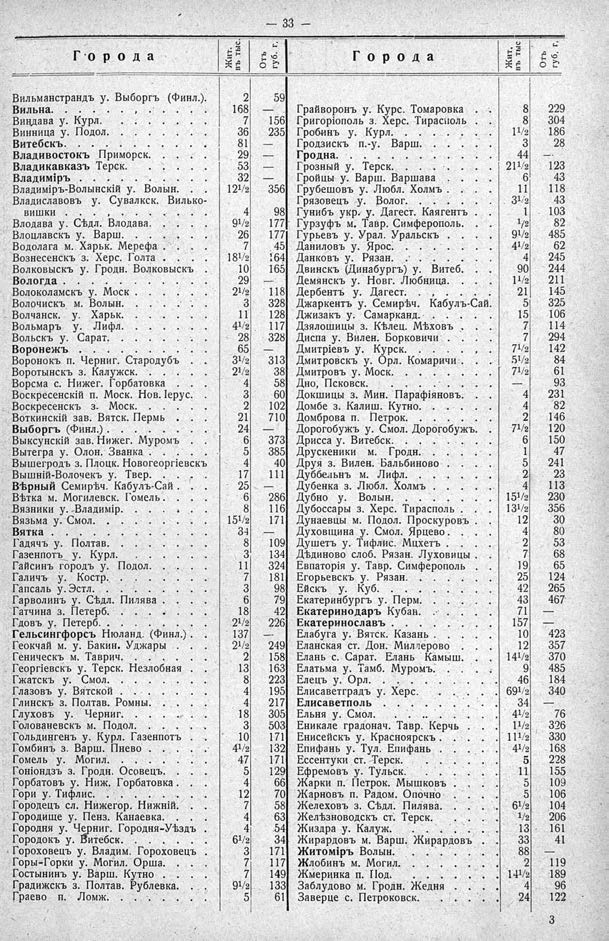

Лист источника 79
Скан

Распознанный текст
— 33 —
Города Жит. въ тыс. Отъ губ. г. Города Жит. въ тыс. Отъ губ. г.
Вильманстрандъ у. Выборгъ (Финл.). 2 59
Вильна. 168 —
Виндава у. Курл. 7 156
Винница у. Подол. 36 235
Витебскъ. 81 —
Владивостокъ Приморск. 29 —
Владикавказъ Терск. 53 —
Владиміръ 32 —
Владиміръ-Волынскій у. Волын. 121/2 356
Владиславовъ у. Сувалкск. Вилько-
вишки 4 98
Влодава у. Сѣдл. Влодава. 91/2 177
Влоцлавскъ у. Варш. 26 177
Водолага м. Харьк. Мерефа 7 45
Вознесенскъ з. Херс. Голта 181/2 164
Волковыскъ у. Гродн. Волковыскъ 10 165
Вологда 29 —
Волоколамскъ у. Моск 21/2 118
Волочискъ м. Волын. 3 328
Волчанск. у. Харьк. 11 128
Вольмаръ у. Лифл. 41/2 117
Вольскъ у. Сарат. 28 328
Воронежъ 65 —
Воронокъ п. Черниг. Стародубъ 31/2 313
Воротынскъ з. Калужск. 21/2 38
Ворсма с. Нижег. Горбатовка 4 58
Воскресенскій п. Моск. Нов. Іерус. 3 60
Воскресенскъ з. Моск. 2 102
Воткинскій зав. Вятск. Пермь 21 710
Выборгъ (Финл.) 24 —
Выксунскій зав. Нижег. Муромъ 6 373
Вытегра у. Олон. Званка 5 385
Вышегродъ з. Плоцк. Новогеоргіевскъ 4 40
Вышній-Волочекъ у. Твер. 17 111
Вѣрный Семирѣч. Кабулъ-Сай 25 —
Вѣтка м. Могилевск. Гомель 6 286
Вязники у. Владимір. 8 116
Вязьма у. Смол. 151/2 171
Вятка 34 —
Гадячъ у. Полтав. 8 109
Газенпотъ у. Курл. 3 134
Гайсинъ городъ у. Подол. 11 324
Галичъ у. Костр. 7 181
Гапсаль у. Эстл. 3 98
Гарволинъ у. Сѣдл. Пилява 6 79
Гатчина з. Петерб. 18 42
Гдовъ у. Петерб. 21/2 226
Гельсингфорсъ Нюланд. (Финл.) 137 —
Геокчай м. у. Бакин. Уджары 21/2 249
Геническъ м. Таврич. 2 158
Георгіевскъ у. Терск. Незлобная 13 163
Гжатскъ у. Смол. 8 223
Глазовъ у. Вятской 4 195
Глинскъ з. Полтав. Ромны. 4 217
Глуховъ у. Черниг. 18 305
Голованевскъ м. Подол. 3 503
Гольдингенъ у. Курл. Газенпотъ 10 171
Гомбинъ з. Варш. Пнево 41/2 132
Гомель у. Могил. 47 171
Гоніондзъ з. Гродн. Осовецъ. 5 129
Горбатовъ у. Ниж. Горбатовка 4 66
Гори у. Тифлис. 12 70
Городецъ сл. Нижегор. Нижній. 7 58
Городище у. Пенз. Канаевка. 4 63
Городня у. Черниг. Городня-Уѣздъ 4 54
Городокъ у. Витебск. 61/2 34
Гороховецъ у. Владим. Гороховецъ 3 171
Горы-Горки у. Могил. Орша. 7 117
Гостынинъ у. Варш. Кутно 7 149
Градижскъ з. Полтав. Рублевка. 91/2 133
Граево п. Ломж. 5 61
Грайворонъ у. Курс. Томаровка 8 229
Григоріополь з. Херс. Тирасполь 8 304
Гробинъ у. Курл. 11/2 186
Гродзискъ п.-у. Варш. 3 28
Гродна. 44 —
Грозный у. Терск. 211/2 123
Гройцы у. Варш. Варшава 6 43
Грубешовъ у. Любл. Холмъ 11 118
Грязовецъ у. Волог. 31/2 43
Гунибъ укр. у. Дагест. Каягентъ 1 103
Гурзуфъ м. Тавр. Симферополь. 1/2 82
Гурьевъ у. Урал. Уральскъ 91/2 485
Даниловъ у. Ярос. 41/2 62
Данковъ у. Рязан. 4 245
Двинскъ (Динабургъ) у. Витеб. 90 244
Демянскъ у. Новг. Любница. 11/2 211
Дербентъ у. Дагест. 21 145
Джаркентъ у. Семирѣч. Кабулъ-Сай. 5 325
Джизакъ у. Самарканд. 15 106
Дзялошицы з. Кѣлец. Мѣховъ 7 114
Дисна у. Вилен. Борковичи 7 294
Дмитріевъ у. Курск. 71/2 142
Дмитровскъ у. Орл. Комаричи 51/2 84
Дмитровъ у. Моск. 71/2 61
Дно, Псковск. — 93
Докшицы з. Мин. Парафіяновъ. 4 231
Домбе з. Калиш. Кутно. 4 82
Домброва п. Петрок. 2 146
Дорогобужъ у. Смол. Дорогобужъ. 71/2 120
Дрисса у. Витебск. 6 150
Друскеники м. Гродн. 1 47
Друя з. Вилен. Бальбиново 5 241
Дуббельнъ м. Лифл. 2 23
Дубенка з. Любл. Холмъ 4 113
Дубно у. Волын. 151/2 230
Дубоссары з. Херс. Тирасполь 131/2 356
Дунаевцы м. Подол. Проскуровъ 12 30
Духовщина у. Смол. Ярцево 4 80
Душетъ у. Тифлис. Мцхетъ 2 53
Дѣдиново слоб. Рязан. Луховицы 7 68
Евпаторія у. Тавр. Симферополь 19 65
Егорьевскъ у. Рязан. 25 124
Ейскъ у. Куб. 42 265
Екатеринбургъ у. Перм. 43 467
Екатеринодаръ Кубан. 71 —
Екатеринославъ 157 —
Елабуга у. Вятск. Казань 10 423
Еланская ст. Дон. Миллерово 12 357
Елань с. Сарат. Елань Камыш. 141/2 370
Елатьма у. Тамб. Муромъ. 9 485
Елецъ у. Орл. 46 184
Елисаветградъ у. Херс. 691/2 340
Елисаветполь 34 —
Ельня у. Смол. 41/2 76
Еникале градонач. Тавр. Керчь 11/2 326
Енисейскъ у. Красноярскъ 111/2 330
Епифань у. Тул. Епифань 41/2 168
Ессентуки ст. Терск. 5 228
Ефремовъ у. Тульск. 11 155
Жарки п. Петрок. Мышковъ 5 109
Жарновъ п. Радом. Опочно 5 106
Желеховъ з. Сѣдл. Пилява. 61/2 104
Желѣзноводскъ ст. Терск. 1/2 206
Жиздра у. Калуж. 13 161
Жирардовъ м. Варш. Жирардовъ 33 41
Житоміръ Волын. 88 —
Жлобинъ м. Могил. 2 119
Жмеринка п. Под. 141/2 189
Заблудово м. Гродн. Жедня 4 96
Заверце с. Петроковск. 24 122
3